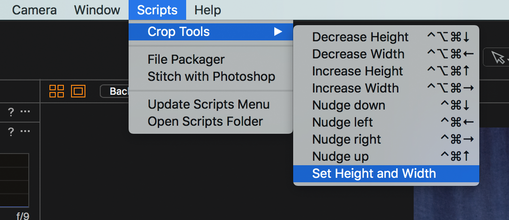
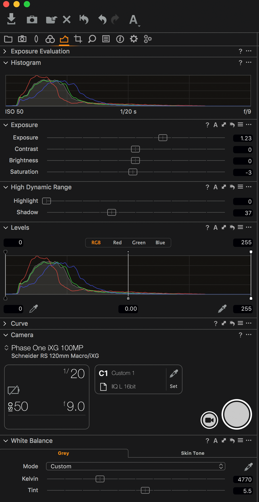

Transmissive Workflow for B&W Negatives and Color Positives
Version updated: August 7, 2018
Overview
This workflow covers the digitization and processing approach to transmissive film-based B&W Negatives and Color Positives. More adjustments are made to transmissive captures than are to the standard reflective work we digitize. Exposure, Highlight and Shadow Recovery (HDR tool), Levels, and possibly minimal Saturation reduction are all used for color transmissive material. Digitization of Color Negative film will not be covered in this workflow documentation.
Quick Reference
|
35mm
|
|
|
|
4x5” sheet film
|
4x5” sheet film
|
8x10” sheet film
|
Transmissive Staging Prep and Camera Set-up Instructions
Use a workstation with the RG3040 copy stand and DT Rcam configuration
The P65+ digital back in Bay 5 is currently being used as the Transmissive digitization workstation (when necessary and/or available, we can choose the use the IQ3100MP back for greater dynamic range and increased PPI/resolution)
Place black paper on copy stand table surface, before the light table and transmissive staging is set-up. (This will protect the gray background paper from tears, fading and allow the staging set to be slightly adjusted as a whole - as needed.)
Allow light table to warm up for a minimum of 5 minutes before creating an LCC & starting captures
Dust off and wipe down light table surface with anti-static cloth
Place staging over light table
Choose appropriate film holder based on original film size (i.e. 35mm cut film, 35mm slide, 120mm, 4x5" sheet film or 8x10" Double ANR Glass Carrier (Anti-Newton Ring glass)
Locate 10 x 14" Plexi for LCC (oversized white plexi used for transmissive LCC creation)
Digital back in the horizontal position (at 0 degrees rotation)
Supplies to have on hand
- IT8 color targets (if working with color positives and 35mm slide, 120mm or 4x5" sheet film formats)
Air compressor (if available), or hand air “rocket”
Nitrile gloves (for safe fingerprint free film handling)
Long silicone-tipped tweezers (for safe assistance in removing or returning cut roll film to film sleeves
Long cotton swabs (if needed to carefully loosen & remove dust from film surface, if air alone doesn’t do it)
Camera & lens configuration by original film size
(listed below - PPI aims per film size and starting point for column height, etc)
35mm (strip film or slide holder)
P65+
ISO 100 (base ISO)
F 8.5 (stays fixed)
Shutter speed determined by density of film - as needed to retain highlight/shadow detail (between 1/60th to 1/8th)
120mm lens (using only the 40mm extension tube)
Column height: approx. 33.4cm
Distance from film strip holder to bottom of electronic shutter (not lens): 10 1/32 inches
Approximate resolution (with P65+): 3500ppi
PPI measured on the long dimension of the image area - using Capture Resolution Ruler - length set to 36mm (for film holder)
35mm slide holder will have length set to 35mm (due to slide mount)
- Note: IQ3 100MP uses ISO 50 (base ISO) and will result in an approximate resolution of 4300ppi (using same height & extension tube)
Microfilm Reels
Set-up using the 35mm carrier (sometimes the 120mm carrier is needed depending on the full page size on the reel - i.e. NY Times full page)
Use the same lens configuration/PPI as the 35mm above
If greater PPI/Resolution is requested (beyond our standard 35mm approach), both extension tubes could be used (the 40mm and 20mm) with the P65+ back or the IQ3 100MP - at the furthest point where a balance of focus can be found.
Weighted bags can be used to keep the two microfilm reels in place on the staging
120mm
P65+
ISO 100 (base ISO)
F 8.5 (stays fixed)
Shutter speed determined by density of film - as needed to retain highlight/shadow detail (between 1/60th to 1/8th)
120mm lens (using only the 20mm extension tube)
Column height: approx. 36.6cm
Distance from film strip holder to bottom of electronic shutter (not lens): 13 3/16 inches
Approximate resolution (with P65+): 2450ppi
PPI measured on the width of the 120mm carrier window - using Capture Resolution Ruler - length set to 58mm
- Note: IQ3 100MP uses ISO 50 (base ISO) and will result in an approximate resolution of 3000ppi (using same height & extension tube)
4x5" sheet film (with magnet holder)
Note: It is advised to use the 8x10" Double ANR Glass Carrier for sheet film (or odd sized film) so that we can capture the film edge and so that the film is flat
IQ3 100MP
ISO 50 (base ISO)
F 8.7 (stays fixed)
Shutter speed determined by density of film - as needed to retain highlight/shadow detail (between 1/60th to 1/8th)
120mm lens only (neither extension tube used)
Column height: 45.5cm
Lens almost fully collapsed - with about ¼" of play for focus
Approximate resolution (with IQ3 100MP): 2000ppi
PPI measured on the long dimension of the DT 4x5" holder window opening (size actually 3.8" x 4.8“) - using Capture Resolution Ruler - length set to 4.8” inches)
4x5" sheet film (with Double ANR Glass Carrier)
P65+
ISO 100
F 8.5 (stays fixed)
Shutter speed determined by density of film - as needed to retain highlight/shadow detail (between 1/60th to 1/8th)
120mm lens only (neither extension tube used)
Column height: 45.7cm
Lens almost fully collapsed - with about ¼" of play for focus
Approximate resolution (with P65+): 1600ppi
PPI measured on the long dimension of the 4x5" IT8 reference target (size actually 3.9" x 4.9“) - using Capture Resolution Ruler - length set to 4.9” inches)
- Note: IQ3 100MP uses ISO 50 (base ISO) and will result in an approximate resolution of 2000ppi
8x10" sheet film (with Double ANR Glass Carrier)
P65+
ISO 100
72mm lens
F 8.6 (need to close down to F8.6 to F8.8 range - due to using 72mm at this focus range)
Shutter speed determined by density of film - as needed to retain highlight/shadow detail (between 1/60th to 1/30th)
Column height: 39.8cm
Approximate resolution (with P65+): 840ppi
PPI measured on the long dimension of the 8x10" film (size usually closer to: 7.8" x 9.8“) - using Capture Resolution Ruler - length set to 9.8” inches)
- Note: IQ3 100MP uses ISO 50 (base ISO) and will result in an approximate resolution of 1030ppi
Capture One Settings (for both B&W Negatives and Color Positives)
Base Characteristics
Mode: Photography
ICC Profile: Embedded Camera Profile (i.e. PhaseOneP65+-NYPL_Bay5_Flash_201710)
Curve: Linear Response
Sharpening
Amount 90
Radius 1.0
Threshold 1.0
Highlight/Shadow density aims
Highlight: 245 (+/- 5)
Shadow: 10 (+/- 5)
Focus Instructions
- The use of IT8 reference/calibration targets (for which we have: 35mm slide, 120mm positive and 4x5" positive) can be helpful for creating a starting point for focus and for measuring ppi - since they are consistent and you’ll become familiar with the grain structures
On initial set-up with 35mm strip film, try to choose a negative/positive that has enough visible grain in the film and tonal range/contrast to assist in determining focus and edge-to-edge sharpness
Orient the film frame as centered as possible to ensure optimal edge-to-edge focus coverage of the 5 point check (4 corners and center) - visible grain at 100% view
Be wary of motion blur, which can be frequent with shutter speeds slower than 1/20s (and depending on shooting speed)
LCC Creation
LCC is made after PPI and focus is set and once the film holder is removed
- Place 10 x 14" Plexi for LCC (frosted side up) on top of capture area for LCC creation
Transmissive Process Recipes and Profiles
U file (16bit) TIFF: Embedded Camera Profile
S file (8bit) TIFF: sRGB
Capture Set-up for B&W Negatives
Create new session
Set above CaptureOne and camera settings - based on film size (in addition to below)
- For B&W negatives, Saturation is set to -100% (under Exposure)
Capture in its negative state (invert within levels at time of processing)
Choose negative that will best help attain optimal focus:
Starting point for focus (using Focus instructions above)
Check PPI with Capture Resolution Ruler (based on film size and digital back - as mentioned above)
Create LCC: use the 10 x 14" Plexi for LCC (using LCC Creation instructions above). RGB target level: 200-220 (note: keep aperture fixed, but increase shutter speed to meet RGB reading range)
Load negative(s) to be digitized (emulsion side down), assess sharpness (fine tune adjustment, as needed)
- The emulsion side of the film has the more matte surface, and has more texture - or what looks like raised or relief areas depending on the build up of silver kept after processing. The base side has the shiny appearance. (The text or frame numbers on the film should read correctly, if being viewed with emulsion side down.)
Capture Instructions for B&W Negatives
At the beginning of each sleeve of 35mm negatives, capture Post-It describing capture range and quantity (tag consistently with color other than green)
Set “capture crop” for just inside image area (with white dots border visible)
- Because we don’t have a transmissive target to standardize white balance and exposure, setting a crop evenly inside the image gives us an accurate Histogram to monitor, and also saves time during processing. View Histogram to ensure no clipping of the highlights or shadows are happening.
Shoot each negative, checking for motion blur, focus and capture density
Highlights: 245 (+/- 5)
Shadows: 10 (+/- 5)
TIP for negatives: “Expose for the shadows, develop for the highlights:” using faster shutter speed is optimal for sharpness, allowing Exposure slider and Shadow Recovery tool to be easily used. (this requires a balance, as we usually want to limit the increase of Exposure to as little as possible - to keep noise from happening, if pushed much more than +1.25.)
TIP: During capture, set a crop box that lies within the image, and be sure to keep crop box centered and aligned with image, to save time on S and U file crop expansion when processing. Adjusting crop-as-you-go.
Tag good captures green, and re-confirm number of slides at the end of each folder.
Processing Instructions for B&W Negatives
Confirm number of captures for each folder, check for duplicates, check focus.
Rename all captures with capture sequence to match those on the work order (this can also be done after capture of each sleeve or sheet of negatives)
Invert all captures from negative state, to positives (use preset within Levels - B&W Negative - levels inversion)
A slight and minimal pull down of midtones within Curves may help with certain negatives (although not always necessary)
If used, this Curves adjustment should carry forward for an entire roll of negatives, for consistency
Use preset within Curves - B&W Negative - Midtone darken
Make any needed minor adjustments to Exposure or HDR to fall within Highlight/Shadow density aims (these adjustments are more common with color positives)
Highlight: 245 (+/- 5)
Shadow: 10 (+/- 5)
Set Height and Width for all captures (be cautious of separating horizontal and vertical images)
Scripts Crop Tools Set Height and Width (35mm slide example below - resolution of 100MP back):
S file: 6050 x 4150 pixels
U file: 6700 x 5000 pixels
- Scripts Crop Tools Nudge (for quick adjustments)

Transmissive Process Recipes and Profiles
U file (16bit) TIFF: Embedded Camera Profile
S file (8bit) TIFF: sRGB
Capture Set-up for Color Positives
Create new session
Set above CaptureOne and camera settings - based on film size
Shoot positive IT8 reference target for focus, PPI and color reference:
Starting point for focus (using Focus instructions above)
Keeping aperture constant (i.e. F8.5) adjust shutter speed to bring white point RGB reading on target to around 240 (+/- 5)
Check PPI with Capture Resolution Ruler (based on film size and digital back - as mentioned above)
Use gray patch within IT8 reference target for initial white balance
- Positives available as: 35mm slide, 120mm or 4x5" sheet
Use Transmissive kit light table as the reference light source (not any other light table)
- Color control: overcoming the human obstacle of teaching your brain to know the balance between the numbers and data provided by the software, and your subjective interpretation of the object. The slide will look different viewed in front of different light sources—we have to make the judgement of how to translate this into the digital file.
Create LCC: use the 10 x 14" Plexi for LCC (using LCC Creation instructions above). RGB target level: 200-220 (note: keep aperture fixed, but increase shutter speed to meet RGB reading range)
Load Color Positive(s) to be digitized (emulsion side down), assess sharpness (typically will require adjustment in focus - for height difference between plastic mounts versus paper mounts)
- The emulsion side of the film has the more matte surface, and has more texture - or what looks like raised or relief areas depending on the build up of the color layers kept after processing. The base side has the shiny appearance.
White Balance
(starting point based on white balance of IT8 target)
Kelvin: 4770
Tint: 5.5
(above example: as used with the DT Atom LED panels with Van Vechten Kodachrome collection)
Levels
After white balance is created off of IT8 target, slight tweaks to individual R, G, B channels within levels can be adjusted for a closer visual match to the IT8 target and/or positive film.
TIP: Use custom presets for project and film stock if applicable and possible
Capture Instructions for Color Positives
At the beginning of each folder, capture Post-It describing capture range and quantity (tag consistently with color other than green)
Shoot each slide, checking for motion blur and focus and capture density
Highlights: 245 (+/- 5)
Shadows: 10 (+/- 5)
TIP for positives: “Expose for the highlights, develop for the shadows:” using shutter speed 1/20s may be optimal for keeping highlight levels under control, allowing Exposure slider and Shadow Recovery tool to be easily used. (this requires a balance, as we usually want to limit the increase of Exposure to as little as possible - to keep noise from happening, if pushed much more than +1.25.)
- When less extreme density range and hot highlight present, we can increase shutter speed to favor the shadow detail retention (which means less extreme push/adjustment needed on the Exposure tool)
TIP: During capture, set a crop box that lies within the image, and be sure to keep crop box centered and aligned with image, to save time on S and U file crop expansion when processing. Adjusting crop-as-you-go.
Tag good captures green, and re-confirm number of slides at the end of each folder.
Below: White Balance and Van Vechten Kodachrome Levels preset with example of typical exposure, HDR, and Levels adjustments

A note on shutter speed and highlight detail retention
If more than one (or ALL) of the RGB channels at reading at 255, (with no adjustments made) that is an indication that a slower shutter speed is needed. For example, if your shutter speed is at a 1/8th of a second (and all RGB channels at reading at 255) - without using any Highlight recovery - and pushing the Highlight recovery close to its maximum of 100, a shorter shutter speed is needed (due to too much light passing through the thin/highlight areas of the film). Increasing to a 1/13th, a 1/15th or 1/20th will help bring in more of that highlight detail and still allow you to pull back that shadow detail with a combination of then increasing the Exposure (up to about 1 stop) and then using the Highlight and Shadow recovery sliders as needed. Sometimes we can find the right exposure for highlights with shutter speed and then only need to push exposure and then use Shadow recovery (without any Highlight recovery needed).
In other slides where there are not any extreme highlights, we can more comfortably use a longer shutter speed, like 1/3rd or ¼ of a second to allow more light to pass through the shadow areas of the film. Finding the balance still, with additional Exposure increase and Shadow recovery.
Saturation
Decreasing the saturation may also help attain more accurate color (as we know with the Phase One backs) Blues, Purples and Reds and be difficult to match
We’re going for the overall look
Decreasing the saturation as little as -3 has been helpful (sometimes up to -7 maximum and sometime no desaturation is needed at all)
No adjustments to curves are made
Below are a few examples of settings with capture reference:
(Favoring the highlights -- shutter speed at 1/13th second) (Van Vechten Box 3 - Capture 107)

(Favoring the shadows -- shutter speed at ¼ of a second) (Box 3 - Capture 105)

Processing Instructions for Color Positives
Confirm number of captures for each folder, check for duplicates, check focus.
Rename all captures with capture sequence to match those on the work order (this can also be done after capture of each sleeve or sheet of negatives)
Make any needed minor adjustments to Exposure or HDR to fall within Highlight/Shadow density aims
Highlight: 245 (+/- 5)
Shadow: 10 (+/- 5)
Set Height and Width for all captures (be cautious of separating horizontal and vertical images)
Scripts Crop Tools Set Height and Width (35mm slide example below - resolution of 100MP back):
S file: 6050 x 4150 pixels
U file: 6700 x 5000 pixels
- Scripts Crop Tools Nudge (for quick adjustments)
*Additional Information & Documentation on Transmissive digitization of positives below
PO Whitney Van Vechten - Quick Start & Setting Guide for 35mm Slides
MD and AS Notes from digitizing 35mm color slides
Notes on recap/presentation of 35mm Color Slides with Carl Van Vechten project